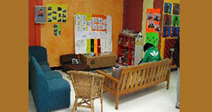
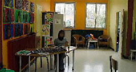
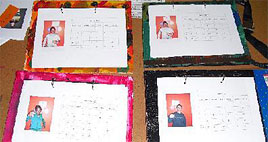

|
Mardi, 14 Décembre 2010 14:28 |

|
L’atelier des prés adolescents est ouvert depuis le 2 septembre 2008.Il accueille jusqu’à 14 jeunes selon les années.
Les jeunes sont soit scolarisés en interne à l’E.P.M.S., soit en classe d’U.P.I dans un collège.
|
|
Les objectifs principaux de cet atelier sont de :
- Faciliter l’intégration des jeunes du SAE sur le SAA, c'est-à-dire, faire la passerelle entre le SAE et le SAA (au niveau horaire, modifications)
- Intégrer progressivement (sur 2 ans) les jeunes sur les ateliers pré professionnels, à travers des stages de découverte
Les activités :
- Initiation à l’outil informatique (1 heure par semaine)
- Temps de prise en charge à la médiathèque de Claye Souilly (1 heure par semaine)
- Activités manuelles diverses, adaptées aux périodes de l’année (exemple : période de Noel).
|
 |
|  |
Calendrier 2010
Participation à l’exposition « 3ème salon d’hiver », réalisation de peinture
|
 |
|
Mise en place de mini-stages sur les ateliers pré professionnels, pour les jeunes qui à la rentrée de septembre prochain passent en pré pro.
Découverte du milieu pré pro, ces stages sont mis en place en accord avec les disponibilités des professionnels sur des matinées dans un premier temps, puis des journées entières.
Stages suivis d’une évaluation, pour définir au mieux l’orientation du jeune.
Depuis cette année, le groupe des prés adolescents est inscrit dans un projet piscine avec le collège Parc des Tourelles de Claye Souilly, réel temps d’échange et d’ouverture sur l’extérieur. Temps apprécié par les jeunes de l’E.P.M.S. et ceux du collège.
|
|
|
|
Mise à jour le Jeudi, 22 Octobre 2015 18:37 |